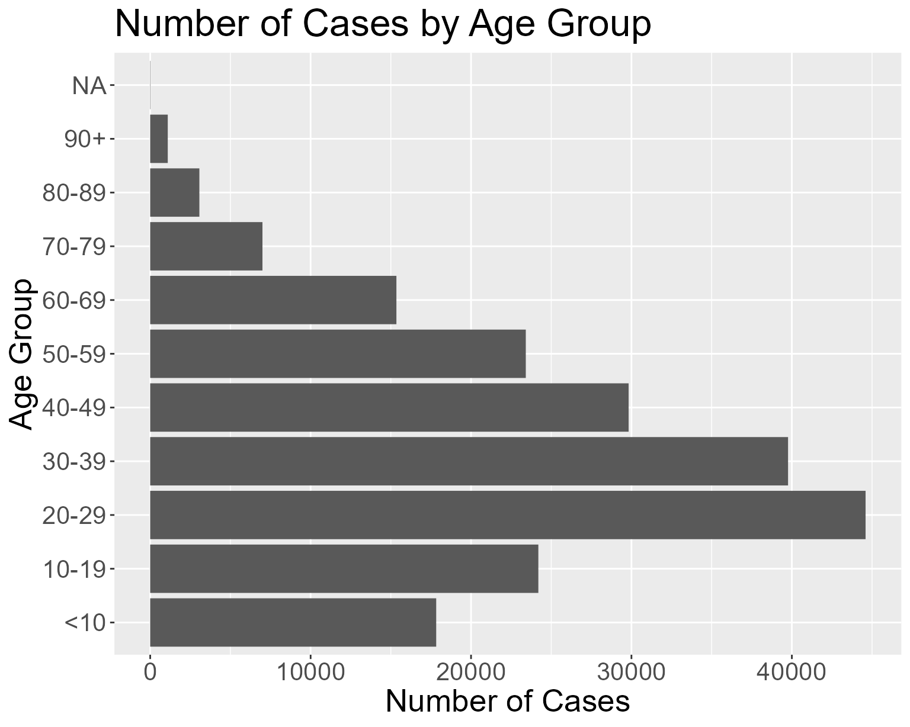
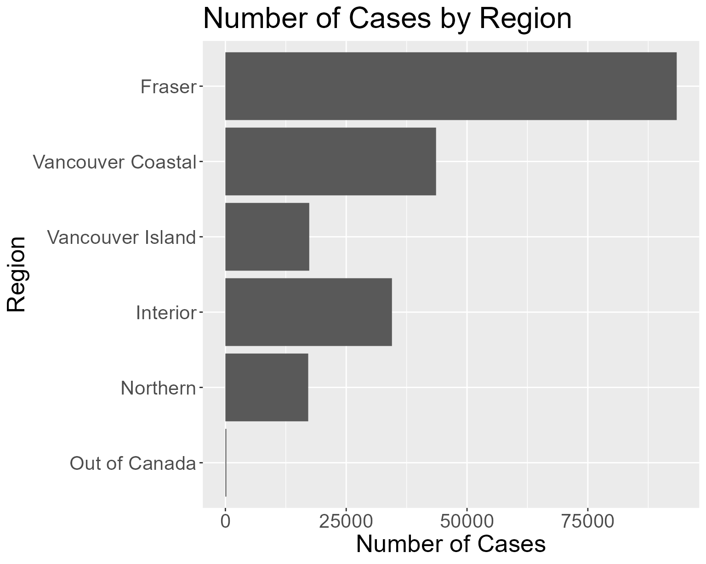
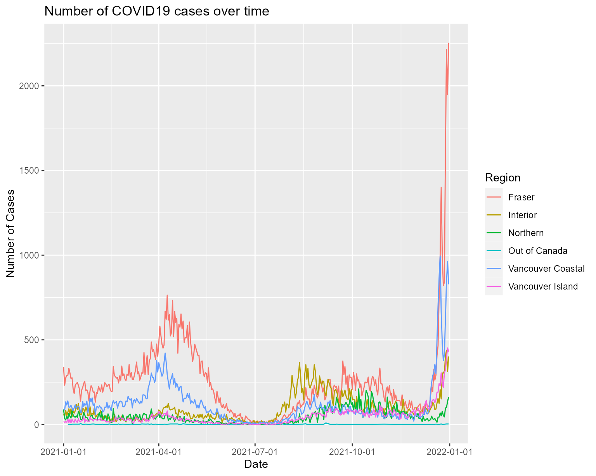
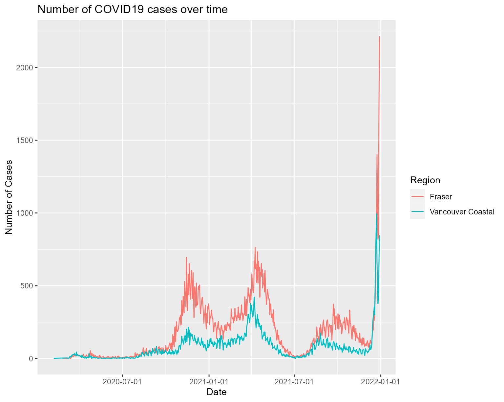

rbccovideda-vignette.RmdThe rbccovideda package provides an easy way for users to access and make plots of the covid data from the British Columbia Center of Disease Control, BCCDC.
It provides function to download and save data from BCCDC website to a local folder.
It shows the summary statistics of the BC covid data within the specified date range.
Only a single function call is needed to generate visual plot for data within the specified date range and the specified condition.
The functions in this package are designed to be independent so that you can call only the one which suit your needs.
A copy of raw data is downloaded in each function call.
This document introduces you how to use the rbccovideda package in several steps.
We will start by loading the library:
get_data() downloads all available covid data (in CSV format) directly from the BCCDC website. It saves a copy of the CSV file in the /project_root/data directory. The directory will be created if it does not exist. The function returns a tibble storing the data in 5 columns.
For example, we can get all available data and save into a tibble like this:
all_data <- get_data()
head(all_data)
#> # A tibble: 6 x 5
#> Reported_Date HA Sex Age_Group Classification_Reported
#> <date> <chr> <chr> <chr> <chr>
#> 1 2020-01-29 Out of Canada M 40-49 Lab-diagnosed
#> 2 2020-02-06 Vancouver Coastal F 50-59 Lab-diagnosed
#> 3 2020-02-10 Out of Canada F 20-29 Lab-diagnosed
#> 4 2020-02-10 Out of Canada M 30-39 Lab-diagnosed
#> 5 2020-02-18 Interior F 30-39 Lab-diagnosed
#> 6 2020-02-24 Fraser M 40-49 Lab-diagnosedshow_summary_stat generates the summary statistics of the data and returns as a dataframe.
This function requires two input parameters startDate and endDate for specifying the date range of data interested. startDate and endDate are strings with date format in YYYY-MM-DD.
For example, to show the summary statistics of covid data in January 2022,
## Show summary statistics for 2022 January
summary <- show_summary_stat("2022-01-01", "2022-01-31")Note the output is a tibble of dimension 1x15.
print("Dimension of the output : ")
#> [1] "Dimension of the output : "
print(dim(summary))
#> [1] 1 15
# to show the 15-columns tibble in a nice way
glimpse(summary)
#> Rows: 1
#> Columns: 15
#> $ total_cases_count <int> 325851
#> $ latest_date <date> 2022-01-31
#> $ latest_daily_cases_count <int> 1050
#> $ max_date <date> 2021-12-31
#> $ max_daily_cases_count <int> 4078
#> $ min_date <date> 2020-01-29
#> $ min_daily_cases_count <int> 1
#> $ max_age_group <chr> "20-29"
#> $ max_age_group_count <int> 67088
#> $ min_age_group <chr> "Unknown"
#> $ min_age_group_count <int> 89
#> $ max_region <chr> "Fraser"
#> $ max_region_count <int> 151762
#> $ min_region <chr> "Out of Canada"
#> $ min_region_count <int> 355Here is a summary of each column in the output tibble:
| Column Name | Description |
|---|---|
| total_cases_count | Total number of cases in the specified date range |
| latest_date | The latest date with reported cases, within the specified date range |
| latest_daily_cases_count | Number of cases reported in the latest_date |
| max_date | The date with the maximum number of daily reported cases, within the specified date range |
| max_daily_cases_count | Number of cases reported in the max_date |
| min_date | The date with the minimum number of daily reported cases, within the specified date range |
| min_daily_cases_count | Number of cases reported in the min_date |
| max_age_group | The age group with the maximum number of reported cases, within the specified date range |
| max_age_group_count | Number of cases reported for the max_age_group |
| min_age_group | The age group with the minimum number of reported cases, within the specified date range |
| min_age_group_count | Number of cases reported for the min_age_group |
| max_region | The region with the maximum number of reported cases, within the specified date range |
| max_region_count | Number of cases reported for the max_region |
| min_region | The region with the minimum number of reported cases, within the specified date range |
| min_region_count | Number of cases reported for the min_region |
The code below shows how to create a histogram with plot_his_by_cond.
This function requires three input parameters. startDate and endDate for specifying the date range. startDate and endDate are strings with date format in YYYY-MM-DD. The condition parameter should be either Age or Region.
For example, to create a histogram of covid cases in 2021 by Age.
## Plot histogram by Region for all covid cases in 2021
plot_hist_by_cond("2021-01-01", "2021-12-31", "Age")
Or to create a histogram of covid cases in 2021 by Region.
## Plot histogram by Region for all covid cases in 2021
plot_hist_by_cond("2021-01-01", "2021-12-31", "Region")
We can also plot a time series line chart easily with the function plot_line_by_date.
Similarly, this function requires two mandatory input parameters. startDate and endDate for specifying the date range. startDate and endDate are strings with date format in YYYY-MM-DD. An optional parameter region, in the form of vector, can be specified to filter the data by regions.
If region is not specified, data of all region is included in the plot.
## Plot line chart for all covid cases by region in 2021
plot_line_by_date("2021-01-01", "2021-12-31")
We can specify a list of regions to be included in the plot, by specifying in the region parameter.
## Plot line chart for all covid cases in 2021, for Fraser and Vancouver Coastal only
plot_line_by_date("2021-01-01", "2021-12-31", c("Fraser", "Vancouver Coastal"))